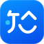

Helms
让目标，
变成协作。
数字员工 · 可控执行
目标角色结果
AI 原生产品 产品能力示意
让目标，
变成协作。
数字员工 · 可控执行
让知识，
形成答案。
企业级 RAG · 原文引用

ZhiHui 知会让讨论，
成为行动。
本地优先 · 智能会议
精选 AI 产品
从产品定义、架构设计，
到 AI Coding 与工程交付。
亲自推进，从 0 到 1。
将 Agent 定义为具备身份、记忆与技能的数字员工。围绕任务拆解、角色分工和人机协作，设计可管理的 AI 数字组织。
从意图，到执行
每一步有分工，关键决策由人确认。
在线演示从分散文档到知识资产。贯通解析、检索、重排与生成，让回答有依据，让知识有边界。
原文引用可追溯，知识访问可控制。
↗ 原文依据私有化部署本地优先的 AI 会议助手。连接音频采集、实时转写与结构化纪要，兼顾隐私、效率和自主控制。
讨论要点、关键决策与潜在风险，
以清晰结构呈现。
复杂系统，真实交付
从城市级平台到智算基础设施，
经历过真实业务的复杂，
更理解一款产品如何走向交付。
60%约
AICITY 人工复检工作量减少20+
标准能力复用的行业场景4亿元近
统筹的算力中心项目群规模300PFLOPS · 约
项目群交付的 AI 算力让多源感知、智能研判与事件处置，形成闭环。
规划物联网、数据、事件、AI 四大中台，将多场景需求抽象为统一数据对象和可复用平台能力。设计 RBAC + ABAC 权限体系，支撑跨组织的数据隔离与受控协作。
围绕「告警聚合 → 多模态复检 → 事件归并 → 风险分级 → 人工确认」优化事件治理，减少约 60% 的人工复检工作量；典型项目月均支撑约 2,000–3,000 起事件流转。
产品规划与平台架构 · 2021.12 — 2024.01从总体架构，到建设交付，再到正式运营。
作为项目负责人，统筹青海昆仑、河南新乡、四川川南算力中心项目群，覆盖 GPU 计算资源、高性能网络、存储系统、云平台与算力服务。
协调多地政府客户、合作伙伴、供应商与研发交付团队，推进方案评审、实施、系统集成、验收与回款，推动三个算力中心建成并投入正式运营。
项目负责人 · 2023.03 — 2024.12关于我
10 余年企业级产品与项目实践。
现在，把更多精力投入 AI 原生产品：
理解业务，拆解系统，亲手验证。
创始人 & CTO
负责 AI 技术战略、产品规划与整体架构。推进 Helms、HelmsKB、ZhiHui，从产品机制设计到研发、评测与版本交付。
产品总监 → 运营中心总监
主导 AICITY 平台规划，参与 40 人规模产研团队管理。负责大型政企解决方案与算力中心项目群的统筹交付。
产品经理 → 产品总监
推进智能楼宇与 AIoT 云管理产品从 0 到 1。累计推动取得 8 项专利、15 项软件著作权，积累产品标准化与商业化实践。
信息管理与信息系统 · 本科
2011.09 — 2015.06
PMP · NPDP
高级信息系统项目管理师
高级智能算力工程师